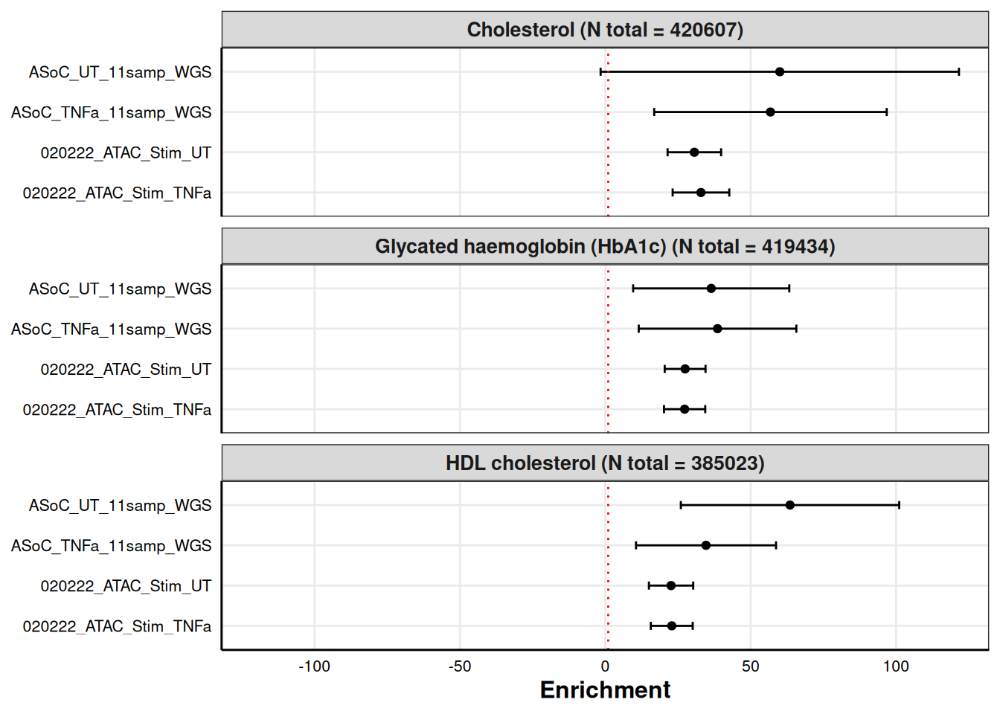
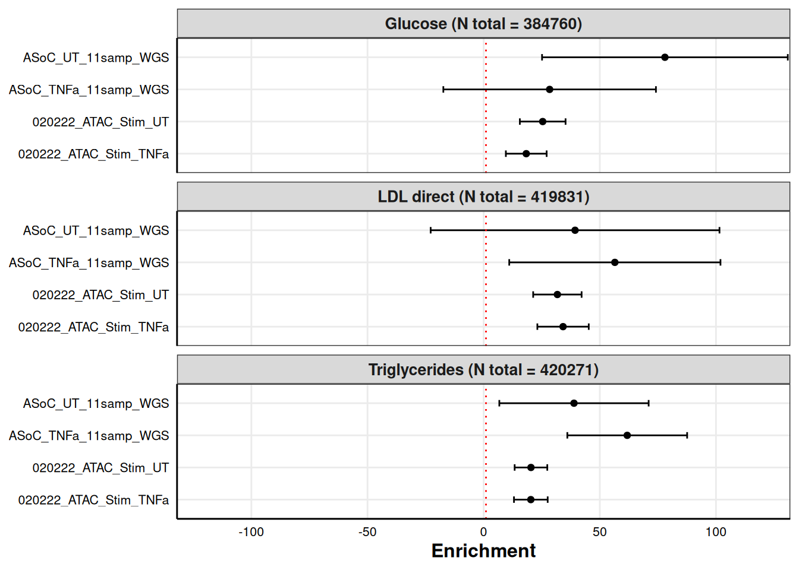

Functional Enrichment Analysis Plots - UKBB
Katie Hooker
2025-03-03
Last updated: 2025-03-05
Checks: 6 1
Knit directory: organoid-rotation/
This reproducible R Markdown analysis was created with workflowr (version 1.7.1). The Checks tab describes the reproducibility checks that were applied when the results were created. The Past versions tab lists the development history.
Great! Since the R Markdown file has been committed to the Git repository, you know the exact version of the code that produced these results.
Great job! The global environment was empty. Objects defined in the global environment can affect the analysis in your R Markdown file in unknown ways. For reproduciblity it’s best to always run the code in an empty environment.
The command set.seed(20250108) was run prior to running
the code in the R Markdown file. Setting a seed ensures that any results
that rely on randomness, e.g. subsampling or permutations, are
reproducible.
Great job! Recording the operating system, R version, and package versions is critical for reproducibility.
Nice! There were no cached chunks for this analysis, so you can be confident that you successfully produced the results during this run.
Using absolute paths to the files within your workflowr project makes it difficult for you and others to run your code on a different machine. Change the absolute path(s) below to the suggested relative path(s) to make your code more reproducible.
| absolute | relative |
|---|---|
| /dartfs/rc/lab/S/Szhao/katieh/organoid-rotation/outputs/UKBB/results/ | outputs/UKBB/results |
| /dartfs/rc/lab/S/Szhao/katieh/organoid-rotation/data/UKBB_pheno_list_validation.csv | data/UKBB_pheno_list_validation.csv |
Great! You are using Git for version control. Tracking code development and connecting the code version to the results is critical for reproducibility.
The results in this page were generated with repository version 56156b6. See the Past versions tab to see a history of the changes made to the R Markdown and HTML files.
Note that you need to be careful to ensure that all relevant files for
the analysis have been committed to Git prior to generating the results
(you can use wflow_publish or
wflow_git_commit). workflowr only checks the R Markdown
file, but you know if there are other scripts or data files that it
depends on. Below is the status of the Git repository when the results
were generated:
Ignored files:
Ignored: .snakemake/auxiliary/
Ignored: .snakemake/conda-archive/
Ignored: .snakemake/conda/
Ignored: .snakemake/incomplete/
Ignored: .snakemake/locks/
Ignored: .snakemake/shadow/
Ignored: .snakemake/singularity/
Ignored: cleaned-sumstats/MVP/
Ignored: cleaned-sumstats/UKBB/
Ignored: code/MVP-data-pull/job_error_3623155.err
Ignored: code/MVP-data-pull/job_output_3623155.out
Ignored: code/pipeline/.snakemake/auxiliary/
Ignored: code/pipeline/.snakemake/conda-archive/
Ignored: code/pipeline/.snakemake/conda/
Ignored: code/pipeline/.snakemake/incomplete/
Ignored: code/pipeline/.snakemake/locks/
Ignored: code/pipeline/.snakemake/shadow/
Ignored: code/pipeline/.snakemake/singularity/
Ignored: data/extracted/
Ignored: outputs/MVP/annotations/
Ignored: outputs/MVP/munged_sumstats/
Ignored: outputs/UKBB/annotations/
Ignored: outputs/UKBB/munged_sumstats/
Ignored: raw-sumstats/
Note that any generated files, e.g. HTML, png, CSS, etc., are not included in this status report because it is ok for generated content to have uncommitted changes.
These are the previous versions of the repository in which changes were
made to the R Markdown (analysis/ukbb-enrichment-plots.Rmd)
and HTML (docs/ukbb-enrichment-plots.html) files. If you’ve
configured a remote Git repository (see ?wflow_git_remote),
click on the hyperlinks in the table below to view the files as they
were in that past version.
| File | Version | Author | Date | Message |
|---|---|---|---|---|
| Rmd | 56156b6 | akhooker | 2025-03-05 | Enrichment plots |
| html | 1b2ecf6 | akhooker | 2025-03-03 | Build site. |
| Rmd | cf3bd3c | akhooker | 2025-03-03 | UKBB validation |
This script is for plotting the outputs of the functional enrichment analysis validation run on the 24 selected UKBB phenotypes.
Plotting function
enrichment_plot <- function(data, group, xlim=NULL){
group = sym(group)
p <- ggplot(data, aes(x = Enrichment, y = !!group))+
geom_point() +
xlab("Enrichment") +
geom_errorbarh(aes(xmin=Enrichment-CI_width, xmax=Enrichment+CI_width), height=.2) +
facet_wrap(Trait_label~.,ncol = 1) +
theme_bw() +
geom_vline(xintercept = 1,linetype="dotted", colour = "red") +
theme(axis.ticks = element_blank(),
panel.grid.minor = element_blank(),
axis.line = element_line(colour = "black"),
axis.text = element_text(size = 8, colour = "black"),
axis.title = element_text(face="bold",size = 12),
strip.text = element_text(face="bold",size = 10),
panel.spacing.x = unit(0.6,units = "cm"),
axis.title.y = element_blank(),
legend.position = "none",
plot.title = element_text(hjust = 0.5))
if(!is.null(xlim)){
p <- p + coord_cartesian(xlim = xlim)
}
print(p)
}Compiling all trait results
output_path <- "/dartfs/rc/lab/S/Szhao/katieh/organoid-rotation/outputs/UKBB/results/"
# Reading in trait abbreviations and their corresponding trait names
pheno_list <- read.csv("/dartfs/rc/lab/S/Szhao/katieh/organoid-rotation/data/UKBB_pheno_list_validation.csv")
pheno_list$N_desc <- NA
for (trait in pheno_list$phenocode){
pheno_list[pheno_list$phenocode == trait,]$N_desc <- paste0("N total = ", pheno_list[pheno_list$phenocode == trait,]$n_cases_full_cohort_both_sexes)
}
pheno_list <- pheno_list %>% mutate(Short_desc = paste0(description, " (", N_desc, ")"))
traits <- pheno_list$phenocode
traitslab <- pheno_list$Short_desc
all_traits <- NULL
for (i in 1:length(traits)){
efile1 <- read.table(paste0(output_path, sprintf("%s_enrichment.results", traits[i])),
header=T)
enrich <- efile1[1:4,c(1,5,6,7)]
enrich$CI_width <- 1.96*enrich$Enrichment_std_error
enrich$Trait <- traits[i]
enrich$Trait_label <- traitslab[i]
if(is.null(all_traits)){
all_traits <- enrich
} else{
all_traits <- rbind(all_traits, enrich)
}
}Plot all traits, four at a time
for (i in seq(1, nrow(all_traits), 16)){
enrichment_plot(all_traits[i:(i+15),], group="Category", xlim=c(-120,120))
}
| Version | Author | Date |
|---|---|---|
| 1b2ecf6 | akhooker | 2025-03-03 |

| Version | Author | Date |
|---|---|---|
| 1b2ecf6 | akhooker | 2025-03-03 |

| Version | Author | Date |
|---|---|---|
| 1b2ecf6 | akhooker | 2025-03-03 |

| Version | Author | Date |
|---|---|---|
| 1b2ecf6 | akhooker | 2025-03-03 |

| Version | Author | Date |
|---|---|---|
| 1b2ecf6 | akhooker | 2025-03-03 |

| Version | Author | Date |
|---|---|---|
| 1b2ecf6 | akhooker | 2025-03-03 |
Plot traits of interest
all_traits_sub <- all_traits %>% subset(Trait_label == "Cholesterol (N total = 420607)" |
Trait_label == "Glycated haemoglobin (HbA1c) (N total = 419434)" |
Trait_label == "HDL cholesterol (N total = 385023)" |
Trait_label == "LDL direct (N total = 419831)" |
Trait_label == "Triglycerides (N total = 420271)" |
Trait_label == "Glucose (N total = 384760)")
for (i in seq(1, nrow(all_traits_sub), 12)){
enrichment_plot(all_traits_sub[i:(i+11),], group="Category", xlim=c(-120,120))
}
Interactive table of all traits and their enrichments
datatable(all_traits)
sessionInfo()R version 4.4.2 (2024-10-31)
Platform: x86_64-pc-linux-gnu
Running under: Ubuntu 24.04.1 LTS
Matrix products: default
BLAS: /usr/lib/x86_64-linux-gnu/openblas-pthread/libblas.so.3
LAPACK: /usr/lib/x86_64-linux-gnu/openblas-pthread/libopenblasp-r0.3.26.so; LAPACK version 3.12.0
locale:
[1] LC_CTYPE=en_US.UTF-8 LC_NUMERIC=C
[3] LC_TIME=en_US.UTF-8 LC_COLLATE=en_US.UTF-8
[5] LC_MONETARY=en_US.UTF-8 LC_MESSAGES=en_US.UTF-8
[7] LC_PAPER=en_US.UTF-8 LC_NAME=C
[9] LC_ADDRESS=C LC_TELEPHONE=C
[11] LC_MEASUREMENT=en_US.UTF-8 LC_IDENTIFICATION=C
time zone: Etc/UTC
tzcode source: system (glibc)
attached base packages:
[1] stats graphics grDevices utils datasets methods base
other attached packages:
[1] DT_0.33 lubridate_1.9.3 forcats_1.0.0 stringr_1.5.1
[5] dplyr_1.1.4 purrr_1.0.2 readr_2.1.5 tidyr_1.3.1
[9] tibble_3.2.1 ggplot2_3.5.1 tidyverse_2.0.0 workflowr_1.7.1
loaded via a namespace (and not attached):
[1] sass_0.4.9 utf8_1.2.4 generics_0.1.3 stringi_1.8.4
[5] hms_1.1.3 digest_0.6.37 magrittr_2.0.3 timechange_0.3.0
[9] evaluate_1.0.1 grid_4.4.2 fastmap_1.2.0 rprojroot_2.0.4
[13] jsonlite_1.8.9 processx_3.8.4 whisker_0.4.1 ps_1.8.1
[17] promises_1.3.2 httr_1.4.7 fansi_1.0.6 crosstalk_1.2.1
[21] scales_1.3.0 jquerylib_0.1.4 cli_3.6.3 rlang_1.1.4
[25] munsell_0.5.1 withr_3.0.2 cachem_1.1.0 yaml_2.3.10
[29] tools_4.4.2 tzdb_0.4.0 colorspace_2.1-1 httpuv_1.6.15
[33] vctrs_0.6.5 R6_2.5.1 lifecycle_1.0.4 git2r_0.35.0
[37] htmlwidgets_1.6.4 fs_1.6.5 pkgconfig_2.0.3 callr_3.7.6
[41] pillar_1.9.0 bslib_0.8.0 later_1.4.1 gtable_0.3.6
[45] glue_1.8.0 Rcpp_1.0.13-1 xfun_0.49 tidyselect_1.2.1
[49] rstudioapi_0.17.1 knitr_1.49 farver_2.1.2 htmltools_0.5.8.1
[53] labeling_0.4.3 rmarkdown_2.29 compiler_4.4.2 getPass_0.2-4